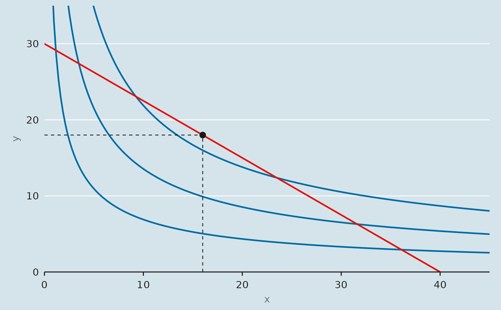

Layers that put indifference_curve(), budget() and optimal_bundle()
onto a ggplot without constructing the data by hand. None of them inherit
aesthetics from the plot, so they can be added to an empty ggplot() or
combined with other data.
Arguments
- u
A function of
xandy, typically fromcobb_douglas().- levels
Utility (or output) levels, one curve each.
- xlim
Range of
xover which to draw the curves.- n
Number of points per curve.
- colour
Line or point colour.
- linewidth
Line width.
- ...
Passed to the underlying geom.
- b
A
budget(), or forgeom_budget()a list of them.- linetype
Line type; the drop lines in
geom_optimum()are always dashed.- size
Point size.
- drop_lines
Draw the dashed lines from the optimum to each axis?
Value
A ggplot2 layer, or a list of layers, that can be added to a plot
with +. The convention throughout the package: a geom_*() returns a
single layer when it draws one thing (geom_budget(), geom_demand(),
geom_engel()) and a list when it draws several that belong together
(geom_optimum()'s point and drop lines, geom_consumption_path()'s
path and points, geom_indifference()'s path and the vertical arm of a
Leontief L). Both add with + identically.
Details
geom_indifference()draws one path perlevel.geom_budget()draws the budget (or isocost) line between its two intercepts. Given a list of budgets it draws one line each, which is how a price or income change is shown.geom_optimum()marks the chosen bundle, with dashed lines dropping to each axis.
See also
plot_consumer_choice() for the whole chart in one call.
Examples
library(ggplot2)
u <- cobb_douglas(alpha = 0.4)
b <- budget(income = 120, px = 3, py = 4)
ggplot() +
geom_indifference(u, levels = c(8, 12, 16), xlim = c(0, 45)) +
geom_budget(b) +
geom_optimum(u, b) +
coord_cartesian(xlim = c(0, 45), ylim = c(0, 35), expand = FALSE) +
theme_econ()
